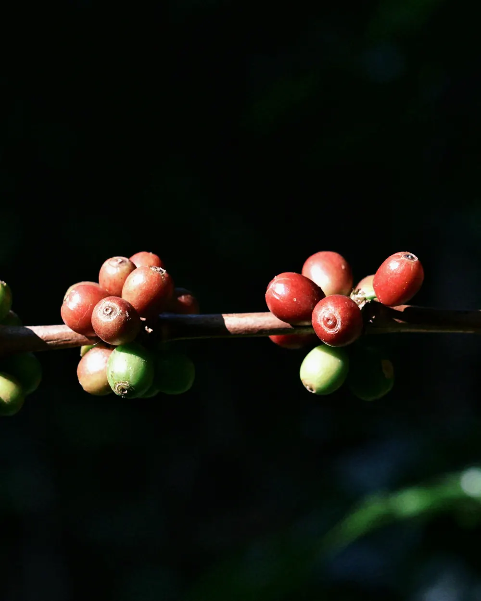
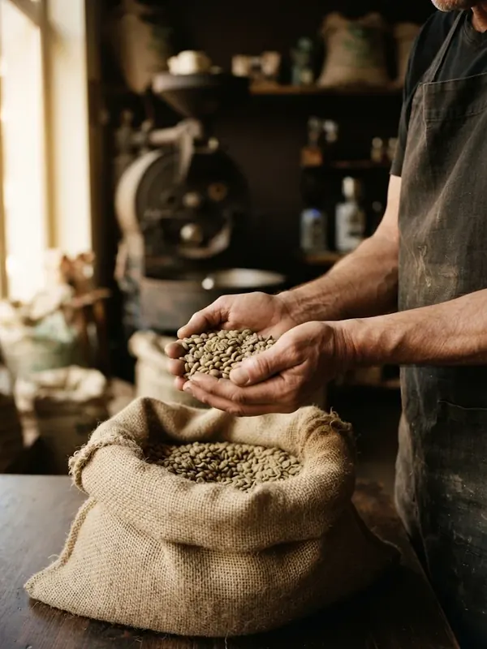
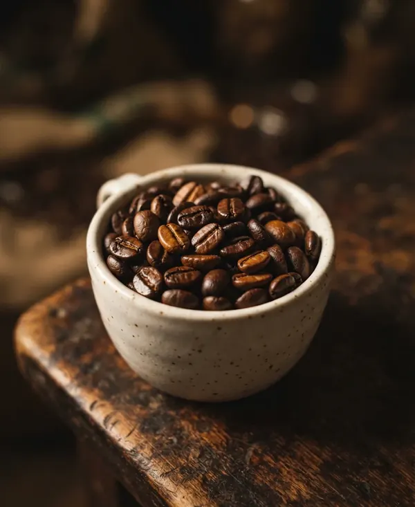
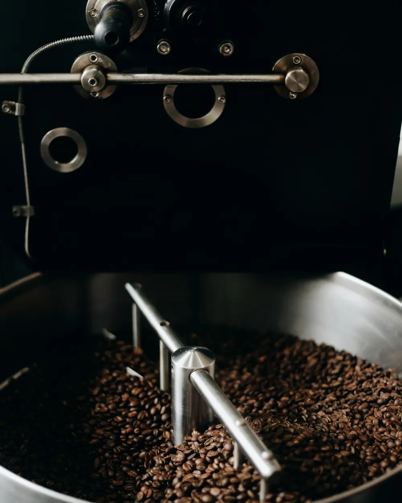
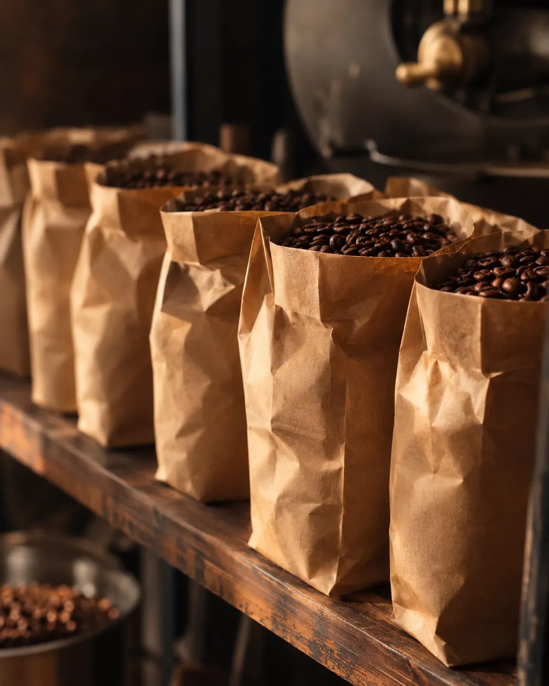
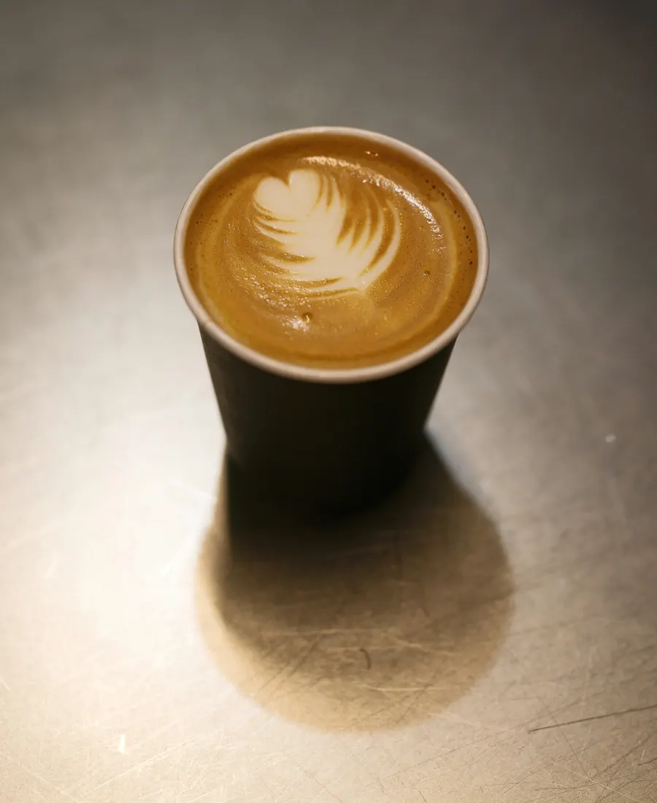
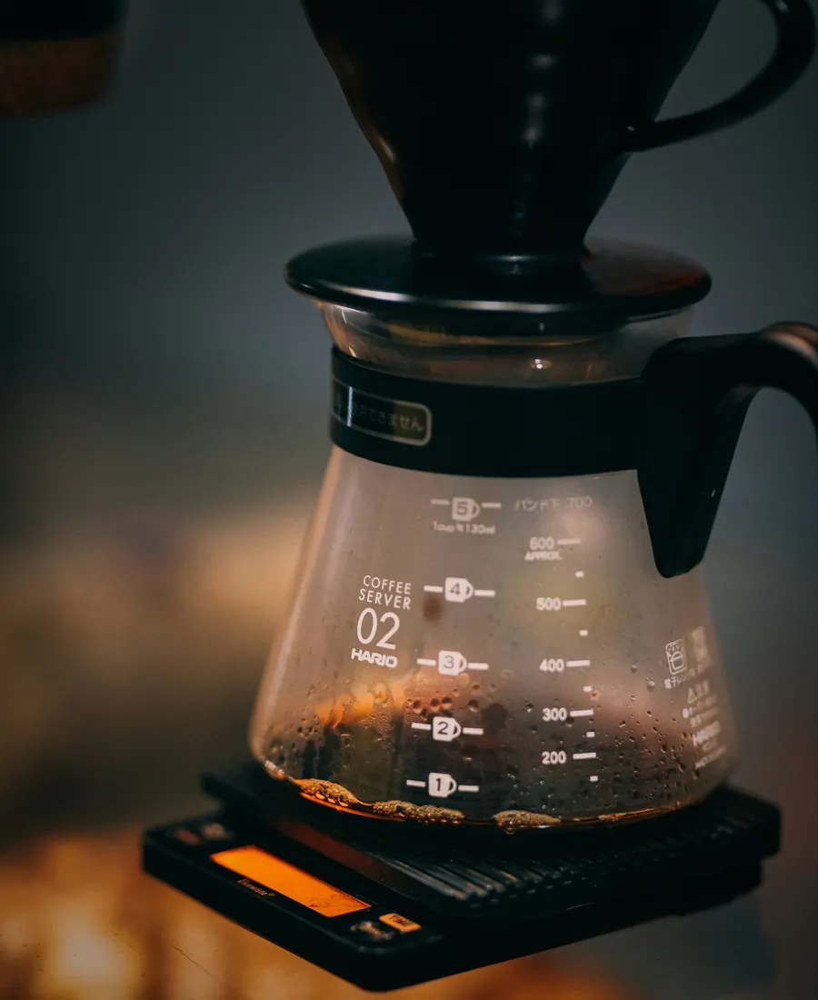
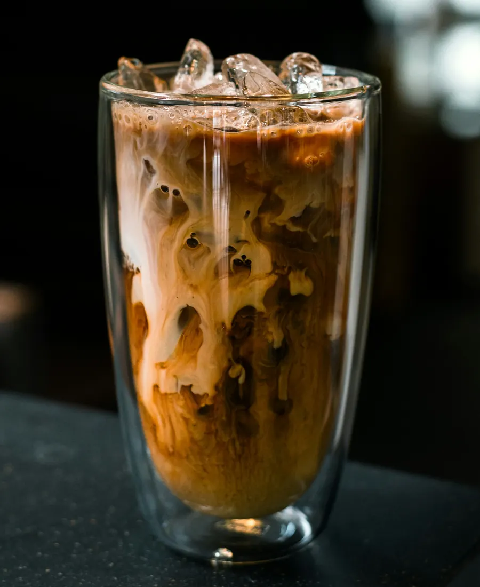
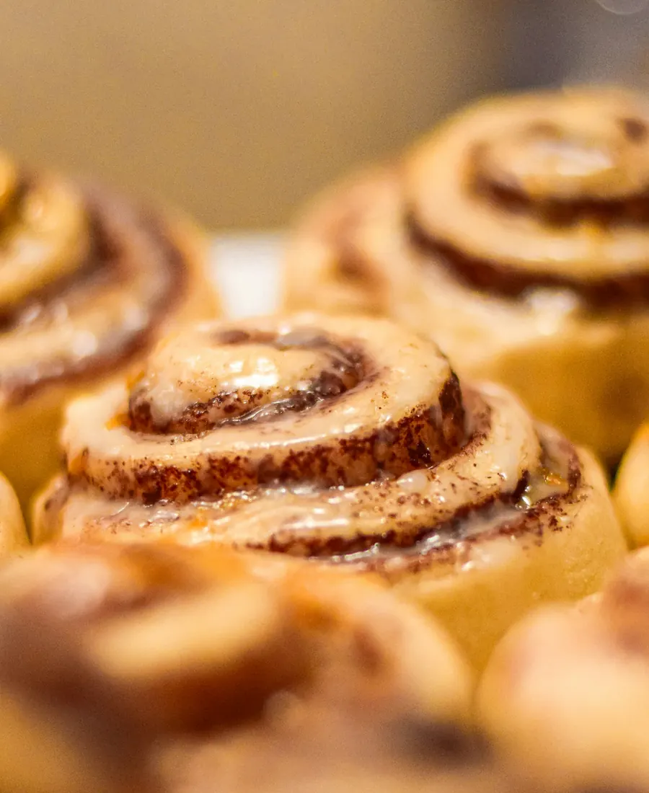
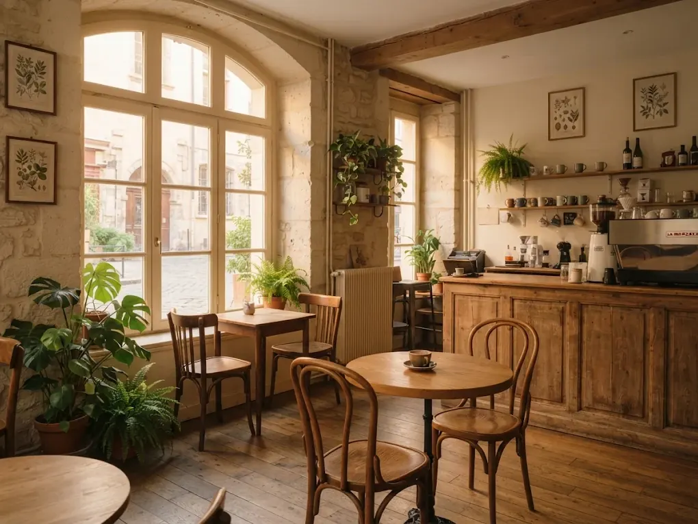

Sourcer
Nous achetons en direct à des fermes d’Éthiopie, du Pérou et de Colombie. Prix juste, traçabilité totale.
Café de spécialité & torréfacteur · Lyon 1er
Horaires ci-dessous
Torréfié lentement, à Lyon.
Servi à sa juste mesure.
Chez Grain, on prend le temps. On choisit chaque lot à la ferme, on le torréfie lentement dans notre atelier lyonnais, et on vous le sert à sa juste mesure. Parce qu’un café, avant tout, c’est un fruit.


Le savoir-faire

Nous achetons en direct à des fermes d’Éthiopie, du Pérou et de Colombie. Prix juste, traçabilité totale.

Par petits lots de 12 kg, dans notre atelier de la Croix-Rousse. Chaque profil est ajusté à son origine.

48 heures de repos avant la vente : le grain dégaze et révèle enfin tous ses arômes.
Mouture à la minute, eau filtrée, recette pesée au gramme près. Pour chaque tasse.
Boissons & douceurs
Tout est préparé au comptoir, avec nos grains torréfiés dans la semaine.




Lait d’avoine sur demande (+0,50 €). Nos cafés en grains sont aussi en vente au comptoir, dès 12 € les 250 g, moulus à la demande.
Dans l’atelier
Il arrive d’Éthiopie, dense et sec. Il sent encore le foin et le petit pois.
L’humidité s’évapore. Le grain jaunit et prend une odeur de pain frais.
Les sucres caramélisent : naissent les notes de noisette et de biscuit.
Le grain craque comme du pop-corn et gonfle de près de moitié.
On arrête ici, à la seconde près : torréfaction médium, la signature Grain.
Moulu à la minute, devant vous. Il est prêt pour la tasse.
Ils en parlent
« Le meilleur flat white de la Presqu’île, et de loin. »
Camille R.
« Le barista m’a raconté l’origine de mon filtre pendant qu’il l’infusait. Passionnant. »
Thomas B.
« La tarte aux pralines maison mérite le détour à elle seule. »
Inès M.
« Un lieu calme et lumineux pour travailler le matin. »
Julien P.
« J’achète mes grains ici chaque semaine : une fraîcheur incroyable. »
Sophie L.
« Le latte sauge & miel, surprenant et délicieux. »
Mehdi K.
« Accueil adorable, on se sent attendu. »
Claire D.
« Le cold brew parfait pour les étés lyonnais. »
Antoine V.
Infos pratiques
| Lundi | Fermé |
|---|---|
| Mardi | 8h – 18h |
| Mercredi | 8h – 18h |
| Jeudi | 8h – 18h |
| Vendredi | 8h – 18h |
| Samedi | 9h – 19h |
| Dimanche | 9h – 15h |
